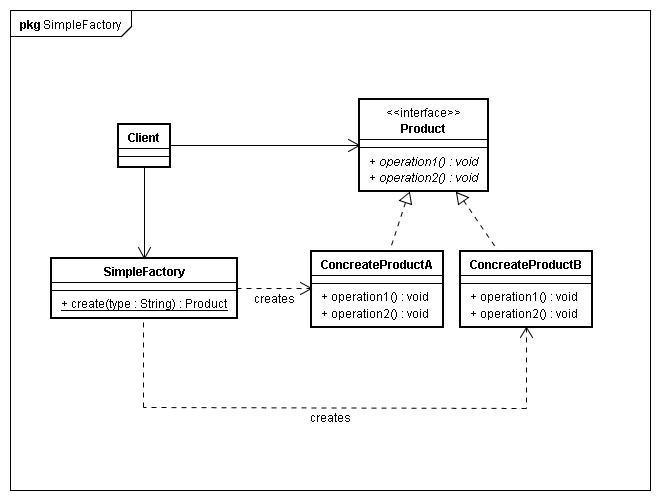
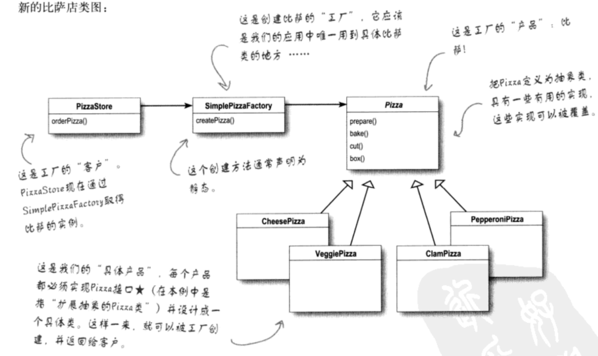
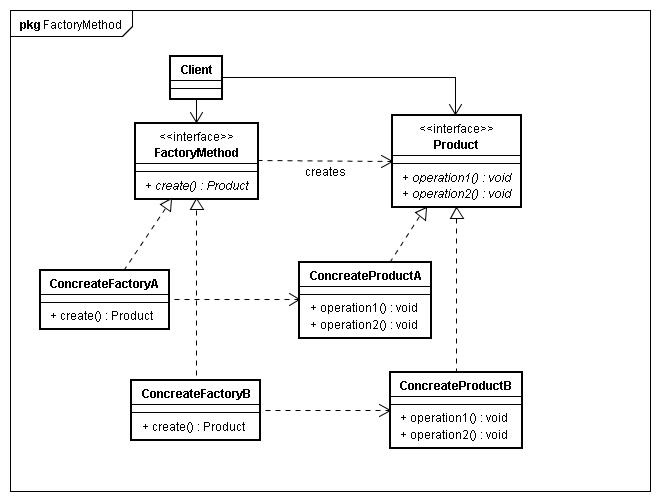
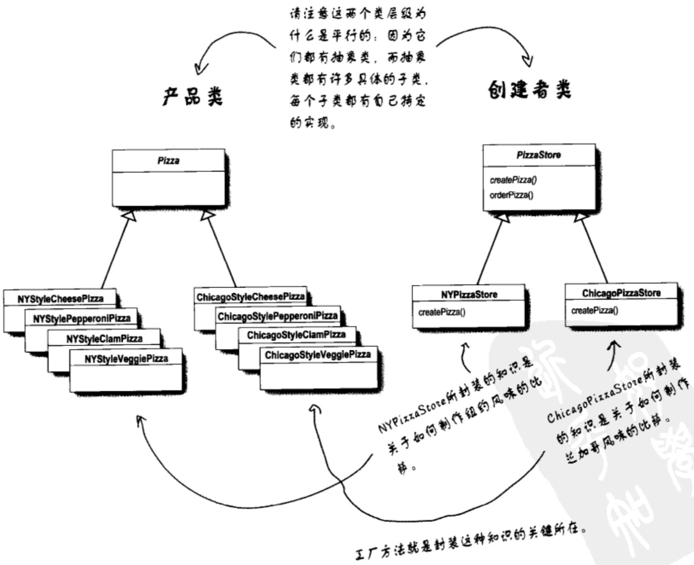
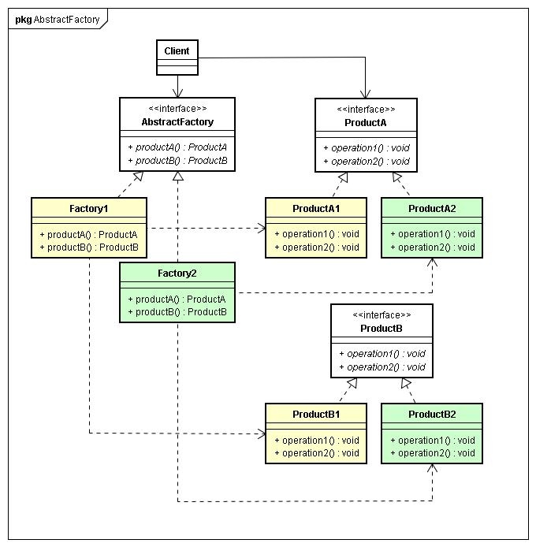
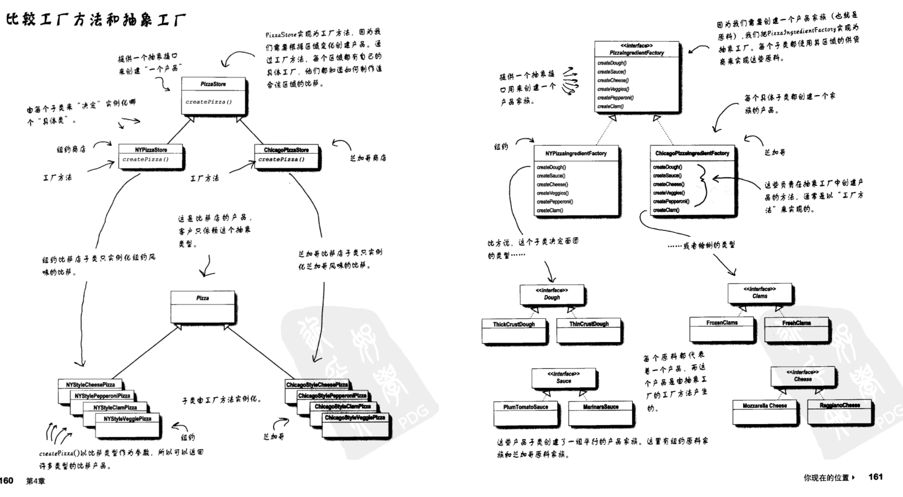
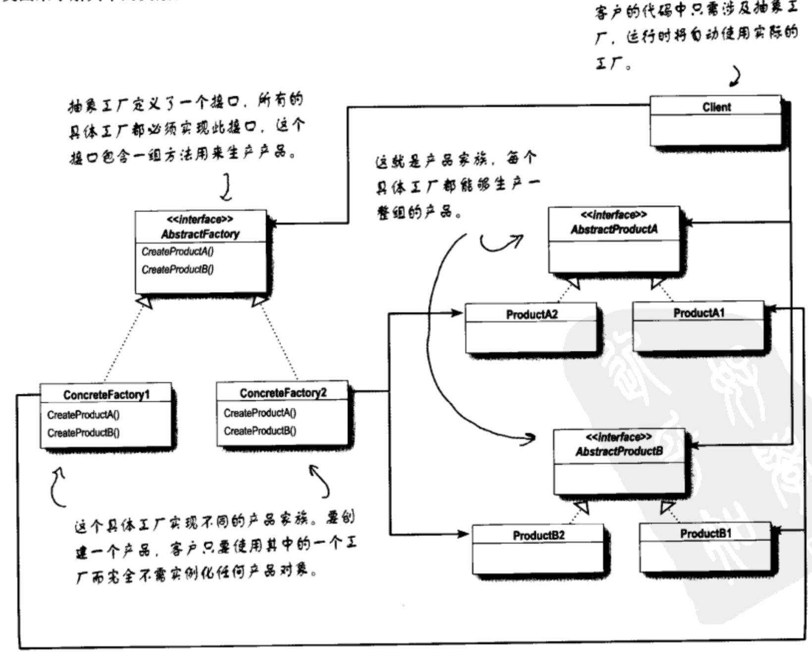
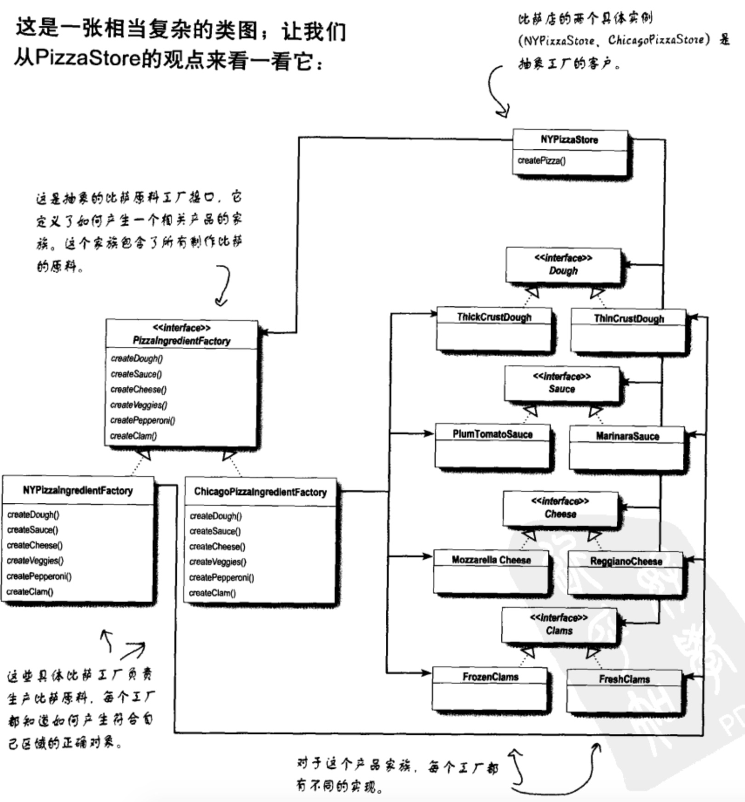

工厂模式
工厂模式三种类型
简单工厂模式
简单工厂模式的工厂类一般是使用静态方法，通过接收的参数的不同来返回不同的对象实例。 不修改代码的话，是无法扩展的。

上面的图入口处画的我感觉有问题，还是看《head first设计模式》书中的图：

工厂方法
工厂方法使用继承，把对象的创建委托给子类，子类通过实现工厂方法来创建对象。 工厂方法是针对每一种产品提供一个工厂类。通过不同的工厂实例来创建不同的产品实例。 在同一等级结构中，支持增加任意产品。

《head first设计模式》书中的图：

其实工厂方法模式只不过是通过子类来创建对象而已。
抽象工厂
抽象工厂使用对象组合，对象的创建被实现在工厂接口所暴露出来的方法中。 抽象工厂是应对产品族概念的。比如说，每个汽车公司可能要同时生产轿车，货车，客车，那么每一个工厂都要有创建轿车，货车和客车的方法。 应对产品族概念而生，增加新的产品线很容易，但是无法增加新的产品。抽象工厂的另一个优点是可以把一群**有关系**的产品组合起来。

小结
★工厂模式中，重要的是工厂类，而不是产品类。产品类可以是多种形式，多层继承或者是单个类都是可以的。但要明确的，工厂模式的接口只会返回一种类型的实例，这是在设计产品类的时候需要注意的，最好是有父类或者共同实现的接口。 ★使用工厂模式，返回的实例一定是工厂创建的，而不是从其他对象中获取的。 ★工厂模式返回的实例可以不是新创建的，返回由工厂创建好的实例也是可以的。
区别：
-
简单工厂和工厂方法的区别 工厂方法就是比简单工厂模式多了一层对工厂类的继承，通过在工厂类的父类中将真正实例化类的方法做成抽象方法（不实现业务逻辑），假设重新方法名（创建产品实例的方法）为createProduct()，然后在工厂类的子类中实现此抽象方法createProduct().差别就在这里。这样的工厂方法比简单工厂灵活在工厂方法可以有多个子类来继承并实现这个工厂方法，像《head first设计模式》中举例的一样，一个披萨店开了纽约披萨加盟店和加州披萨加盟店，纽约的披萨需要纽约的风味，加州的要加州的风味，如果是这样的话简单工厂其实很难满足需求，而工厂方法可以在提供纽约工厂类和加州工厂类（都继承自工厂父类），这样就能在纽约工厂类中实现createProduct（）时去实例化纽约风味的披萨类，加州的工厂类实现createProduct（）时实例化加州风味的披萨类。
-
工厂方法与抽象工厂的区别
-
工厂方法通过继承来负责创建对象，而抽象工厂通过组合创建对象。
-
抽象工程关键在于产品之间的抽象关系，所以至少要两个产品；工厂方法在于生成产品，不关注产品间的关系，所以可以只生成一个产品。
-
抽象工厂中客户端把产品的抽象关系理清楚，在最终使用的时候，一般使用客户端（和其接口），产品之间的关系是被封装固定的；而工厂方法是在最终使用的时候，使用产品本身（和其接口）。
-
抽象工厂的工厂是类；工厂方法的工厂是方法。
抽象工厂的工厂类就做一件事情生产产品。生产的产品给客户端使用，绝不给自己用。 工厂方法生产产品，可以给系统用，可以给客户端用，也可以自己这个类使用。自己这个类除了这个工厂方法外，还能有其他功能性的方法
- 简单工厂 用来生产同一等级结构中的任意产品。（对于增加新的产品，无能为力）
- 工厂方法 用来生产同一等级结构中的固定产品。（支持增加任意产品）
- 抽象工厂 用来生产不同产品族的全部产品。（对于增加新的产品，无能为力；支持增加产品族）
其中抽象工厂比较难理解，它和工厂方法的区别也比较难理解，下面的图或许能起到作用：

这个图来自《head first设计模式》，然而这个图其实也没有画的太好，我感觉应该在抽象工厂中加上pizza的那块工厂方法可能理解更好。
简单工厂模式
简单工厂模式其实可以按照《head first设计模式》中讲的，将其理解为一个函数，然后这个函数里面需要使用if判断出具体实例化类，继而将if判断抽离出来做成一个工厂类中的一个方法，这样能做到工厂类可被复用。按照书中所说，简单工厂严格讲不属于设计模式，只是一种代码规范。 演进过程如下, 最开始未使用设计模式时是这样的：
class CheesePizza():
def __init__(self):
super(CheesePizza, self).__init__()
self._name = "Cheese Pizza"
def get_name(self):
return self._name
def prepare(self):
print("Preparing " + self._name)
print(self._name + " is OK.")
class ClamPizza():
def __init__(self):
super(ClamPizza, self).__init__()
self._name = "Clam Pizza"
def get_name(self):
return self._name
def prepare(self):
print("Preparing " + self._name)
print(self._name + " is OK.")
def order_pizza(type):
pizza = None
if type == 'cheese':
pizza = CheesePizza()
elif type == 'clam':
pizza = ClamPizza()
pizza.prepare()
return pizza
##test code##
pizza = order_pizza("cheese")
print("jack ordered a " + pizza.get_name() + "\n")
pizza = order_pizza("clam")
print("lily ordered a " + pizza.get_name() + "\n")
可以看到，如果pizza类太多的话，我们要不停的修改order_pizza函数的if模块判断内容，新加类或者删除类都需要不停修改。所以我们将这段代码放到单独的函数中，再将其用类包裹起来，这样就能做到这个类就只负责实例化pizza对象，以后修改就只在这个类中修改即可。 演变后代码如下：
from abc import ABCMeta, abstractmethod
######factory class######
class PizzaStore:
def __init__(self, factory):
self._factory = factory
def order_pizza(self, pizza_type):
pizza = self._factory.create_pizza(pizza_type)
pizza.prepare()
return pizza
class SimplePizzaFactory:
def create_pizza(self, pizza_type):
pizza = None
if pizza_type == "cheese":
pizza = CheesePizza()
elif pizza_type == "clam":
pizza = ClamPizza()
return pizza
#######pizza class########
class Pizza:
__metaclass__ = ABCMeta
@abstractmethod
def __init__(self):
pass
def get_name(self):
return self._name
def prepare(self):
print("Preparing " + self._name)
print(self._name + " is OK.")
class CheesePizza(Pizza):
def __init__(self):
super(CheesePizza, self).__init__()
self._name = "Cheese Pizza"
class ClamPizza(Pizza):
def __init__(self):
super(ClamPizza, self).__init__()
self._name = "Clam Pizza"
######test code######
if __name__ == '__main__':
store = PizzaStore(SimplePizzaFactory())
pizza = store.order_pizza("cheese")
print("jack ordered a " + pizza.get_name() + "\n")
pizza = store.order_pizza("clam")
print("lily ordered a " + pizza.get_name() + "\n")
工厂方法模式
相比简单工厂，此工厂模式更灵活，通过将简单工厂中的工厂类做成抽象类，然后重点把实例化产品的工厂方法做成抽象的方法，再加入多个工厂子类来实现实例化产品的的工厂方法，这样能灵活应对多种不同需求的实例化类需求。
示例代码如下：
from abc import ABCMeta, abstractmethod
#######pizza class#######
class Pizza:
__metaclass__ = ABCMeta
@abstractmethod
def __init__(self):
self._name = None
def prepare(self):
print("Preparing " + self._name)
def bake(self):
print("Bake for 25 minutes at 350")
def cut(self):
print("Cutting the pizza into diagonal slices")
def box(self):
print("Place pizza in official PizzaStore box")
def get_name(self):
return self._name
class NYStyleCheesePizza(Pizza):
def __init__(self):
super(NYStyleCheesePizza, self).__init__()
self._name = "NY Style Sauce and Cheese Pizza"
class NYStylePepperoniPizza(Pizza):
def __init__(self):
super(NYStylePepperoniPizza, self).__init__()
self._name = "NY Style Pepperoni Pizza"
class NYStyleClamPizza(Pizza):
def __init__(self):
super(NYStyleClamPizza, self).__init__()
self._name = "NY Style Clam Pizza"
class NYStyleVeggiePizza(Pizza):
def __init__(self):
super(NYStyleVeggiePizza, self).__init__()
self._name = "NY Style Veggie Pizza"
class ChicagoStyleCheesePizza(Pizza):
def __init__(self):
super(ChicagoStyleCheesePizza, self).__init__()
self._name = "Chicago Style Deep Dish Cheese Pizza"
def cut(self):
print("Cutting the pizza into square slices")
class ChicagoStylePepperoniPizza(Pizza):
def __init__(self):
super(ChicagoStylePepperoniPizza, self).__init__()
self._name = "Chicago Style Pepperoni Pizza"
def cut(self):
print("Cutting the pizza into square slices")
class ChicagoStyleClamPizza(Pizza):
def __init__(self):
super(ChicagoStyleClamPizza, self).__init__()
self._name = "Chicago Style Clam Pizza"
def cut(self):
print("Cutting the pizza into square slices")
class ChicagoStyleVeggiePizza(Pizza):
def __init__(self):
super(ChicagoStyleVeggiePizza, self).__init__()
self._name = "Chicago Deep Dish Veggie Pizza"
def cut(self):
print("Cutting the pizza into square slices")
########factory store code#######
class PizzaStore:
__metaclass__ = ABCMeta
@abstractmethod
def create_pizza(self, type):
pass
def order_pizza(self, pizza_type):
pizza = self.create_pizza(pizza_type)
print("--- Making a " + pizza.get_name() + " ---")
pizza.prepare()
pizza.bake()
pizza.cut()
pizza.box()
return pizza
class NYPizzaStore(PizzaStore):
def create_pizza(self, type):
style_pizza_dict = dict(cheese=NYStyleCheesePizza, veggie=NYStyleVeggiePizza, clam=NYStyleClamPizza,
pepperoni=NYStylePepperoniPizza)
return style_pizza_dict[type]()
class ChicagoPizzaStore(PizzaStore):
def create_pizza(self, type):
style_pizza_dict = dict(cheese=ChicagoStyleCheesePizza, veggie=ChicagoStyleVeggiePizza,
clam=ChicagoStyleClamPizza,
pepperoni=ChicagoStylePepperoniPizza)
return style_pizza_dict[type]()
######test code######
if __name__ == '__main__':
ny_store = NYPizzaStore()
chicago_store = ChicagoPizzaStore()
pizza = ny_store.order_pizza('cheese')
print('jack ordered a ' + pizza.get_name() + ' pizza')
pizza = chicago_store.order_pizza('veggie')
print('lucy ordered a ' + pizza.get_name() + ' pizza')
pizza = ny_store.order_pizza('clam')
print('lily ordered a ' + pizza.get_name() + ' pizza')
抽象工厂模式
抽象工厂模式提供一个接口，用于创建相关或依赖对象的家族，而不需要明确指定具体类。


抽象工厂的任务是创建一个负责创建一组产品的接口。这个接口内的每个方法都负责创建一个具体的产品。
示例代码：
class FreshClams:
def __str__(self):
return 'Fresh Clams'
class MarinaraSauce:
def __str__(self):
return "Marinara Sauce"
class ThickCrustDough:
def __str__(self):
return "Thick Crust Dough"
class ReggianoCheese:
def __str__(self):
return "Reggiano Cheese"
class SlicedPepperoni:
def __str__(self):
return "Sliced Pepperoni"
class Garlic:
def __str__(self):
return "Garlic"
class Onion:
def __str__(self):
return "Onion"
class RedPepper:
def __str__(self):
return "Red Pepper"
class PizzaIngredientFactory:
'''
定义原料工厂
'''
def create_dough(self):
raise NotImplementedError()
def create_sauce(self):
raise NotImplementedError()
def create_cheese(self):
raise NotImplementedError()
def create_pepperoni(self):
raise NotImplementedError()
def create_clam(self):
raise NotImplementedError()
def create_veggies(self):
raise NotImplementedError()
class NYPizzaIngredientFactory(PizzaIngredientFactory):
def create_dough(self):
print("Tossing %s" % ThickCrustDough())
return ThickCrustDough()
def create_sauce(self):
print("Adding %s..." % MarinaraSauce())
return MarinaraSauce()
def create_cheese(self):
print("Adding %s..." % ReggianoCheese())
return ReggianoCheese()
def create_pepperoni(self):
print("Adding %s..." % SlicedPepperoni())
return SlicedPepperoni()
def create_clam(self):
print("Adding %s..." % FreshClams())
return FreshClams()
def create_veggies(self):
veggies = [Garlic(), Onion(), RedPepper()]
for veggie in veggies:
print(" %s" % veggie)
return veggies
class Pizza:
'''
pizza 工厂
'''
dough = None
sauce = None
cheese = None
veggies = []
pepperoni = None
clam = None
def __init__(self, name, ingredient_factory):
self.name = name
self.ingredient_factory = ingredient_factory
def prepare(self):
raise NotImplementedError()
def bake(self):
print("Bake for 25 minutes at 350")
def cut(self):
print("Cutting the pizza into diagonal slices")
def box(self):
print("Place pizza in official PizzaStore box")
def __str__(self):
return self.name
class NYStyleCheesePizza(Pizza):
def prepare(self):
dough = self.ingredient_factory.create_dough()
sauce = self.ingredient_factory.create_sauce()
cheese = self.ingredient_factory.create_cheese()
clam = self.ingredient_factory.create_clam()
veggies = self.ingredient_factory.create_veggies()
class NYStyleClamPizza(Pizza):
def prepare(self):
dough = self.ingredient_factory.create_dough()
sauce = self.ingredient_factory.create_sauce()
cheese = self.ingredient_factory.create_cheese()
clam = self.ingredient_factory.create_clam()
class PizzaStore:
'''
pizza 店工厂
'''
ingredient_factory = None
def create_pizza(self, pizza_type):
# 每个需要子类实现的方法都会抛出NotImplementedError
# 我们也可以把 PizzaStore 的 metaclass 设置成 abc.ABCMeta
# 这样的话，这个类就是真正的抽象基类
raise NotImplementedError()
def order_pizza(self, pizza_type): # 现在把 pizza 的类型传入 order_pizza()
pizza = self.create_pizza(pizza_type)
# 一旦我们有了一个 pizza，需要做一些准备（擀面皮、加佐料），然后烘烤、切片、装盒
pizza.prepare()
pizza.bake()
pizza.cut()
pizza.box()
return pizza
# 下边是其他可能用到的方法
class NYStylePizzStore(PizzaStore):
ingredient_factory = NYPizzaIngredientFactory()
def create_pizza(self, pizza_type):
# 根据 pizza 类型，我们实例化正确的具体类，然后将其赋值给 pizza 实例变量
if pizza_type == 'cheese':
pizza = NYStyleCheesePizza('NY Style Sauce and Cheese Pizza',
self.ingredient_factory)
elif pizza_type == 'clam':
pizza = NYStyleClamPizza('NY Style Clam Pizza',
self.ingredient_factory)
return pizza
def main():
nystore = NYStylePizzStore()
pizza = nystore.order_pizza('cheese')
print('*' * 10)
print("goodspeed ordered a %s" % pizza)
print('*' * 10)
if __name__ == '__main__':
main()